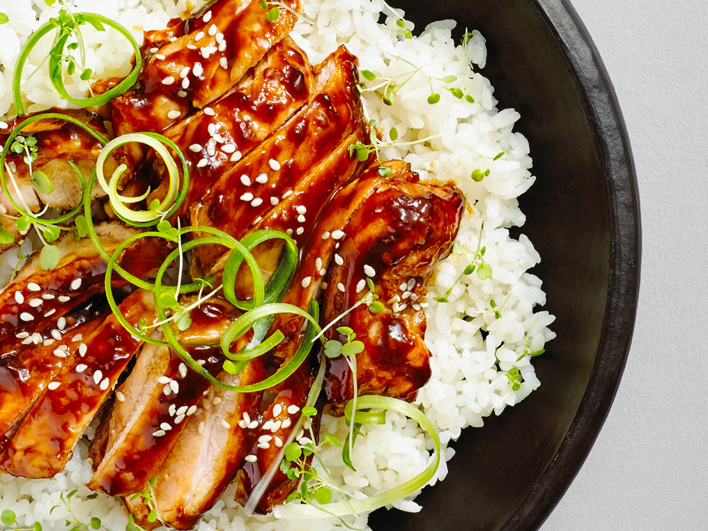

Teriyaki Chicken
Ingredients
- 2 tbsp toasted sesame oil
- 6 skinless and boneless chicken thighs, sliced
- 2 large garlic cloves, crushed
- 1 thumb-sized piece ginger, grated
- 50g runny honey
- 30ml light soy sauce
- 1 tbsp rice wine vinegar
- 1 tbsp sesame seeds , to serve
- 4 spring onions, shredded, to serve
- white or brown rice, to serve
- steamed bok choi or spring greens, to serve
Teriyaki Sauce
- 1 cup water
- ¼ cup soy sauce
- 5 teaspoons packed brown sugar
- 1 tablespoon honey, or more to taste
- ½ teaspoon ground ginger
- ¼ teaspoon garlic powder
- 2 tablespoons cornstarch
- ¼ cup cold water
How to Make this Teriyaki Chicken
-
Heat the oil in a non-stick pan over a medium heat.
-
Add the chicken and fry for 7 mins, or until golden. Add the garlic and ginger and fry for 2 mins.
-
Stir in the honey, soy sauce, vinegar and 100ml water.
-
Bring to the boil and cook for 2 - 5 mins over a medium heat until the chicken is sticky and coated in a thick sauce.
-
Scatter over the spring onions and sesame seeds, then serve the chicken with the rice and steamed veg.
How to Make Homemade Teriyaki Sauce
- Combine 1 cup water, soy sauce, brown sugar, honey, ginger, and garlic powder in a saucepan over medium heat. Cook until nearly heated through, about 1 minute.
- Mix cornstarch and 1/4 cold water together in a cup; stir until dissolved. Add to the saucepan. Cook and stir sauce until thickened, 5 to 7 minutes.